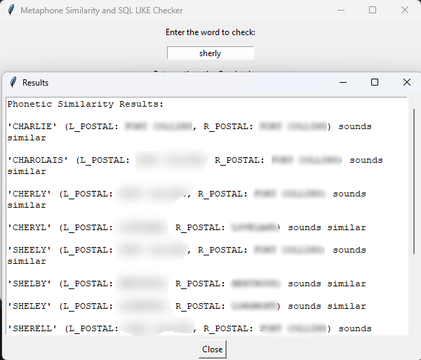

Problem
When I relocated to Colorado and began my GIS Analyst role at LETA 911,
I was unfamiliar with the regional road names. Our partner agencies frequently
submitted new or proposed street names for integration into the emergency response system.
Manually checking road names across hundreds of segments in ArcGIS Pro was time-consuming
and prone to error — especially when the names sounded alike or looked similar. For example,
if we already had “Sher Lee Street” and someone proposed “Cherby Street” it could easily
lead to confusion during a 911 call. A dispatcher might mishear or misinterpret the name,
which could delay an emergency response.
Solution
Developed a standalone Python-based Road Name Similarity Checker, which:
- Scans a street name field in a geodatabase layer.
- Uses Double Metaphone for phonetic comparison.
- Uses FuzzyWuzzy string matching to check alphabetic similarity.
- Provides results in a scrollable GUI, including the matched names and their associated L_POSTAL and R_POSTAL codes.
- Supports SQL-like pattern matching (e.g., partial matches, substrings).
</> Snippet
# Core similarity checking logic
primary_check, secondary_check = doublemetaphone(word_to_check)
results = set() # Use a set to ensure unique results
# Doublemetaphone phonetic matching
for word, l_postal, r_postal in words_data:
primary, secondary = doublemetaphone(word.strip())
if primary_check == primary:
results.add(f"'{word}' (L_POSTAL: {l_postal}, R_POSTAL: {r_postal}) sounds similar")
elif secondary_check == secondary and secondary_check != '':
results.add(f"'{word}' (L_POSTAL: {l_postal}, R_POSTAL: {r_postal}) sounds similar)")
# Fuzzywuzzy string similarity matching
for word, l_postal, r_postal in words_data:
fuzz_similar_score = fuzz.ratio(word_to_check.upper(), word)
if fuzz_similar_score >= 75:
results.add(f"'{word}' (L_POSTAL: {l_postal}, R_POSTAL: {r_postal}) sounds similar")
# Display results
results = sorted(list(results))
if results:
phonetic_results = "\n\n".join(results)
else:
phonetic_results = f"'{word_to_check}' does not sound similar to any of the provided words."
show_scrollable_info("Results", f"Phonetic Similarity Results:\n\n{phonetic_results}\n")Features
- Reads directly from File Geodatabases using GeoPandas.
- User-friendly Tkinter GUI for non-coders.
- Supports both phonetic (e.g., doublemetaphone) and string-based (fuzz.ratio) logic.
- Contextual results include L/R postal codes for better spatial clarity.
- Pattern-based match via str.contains() for LIKE-query simulation.
Example Use Case
Checking if the proposed street name "Cherby Street" conflicts with or sounds too similar to an existing "Sher Lee Street" in the emergency dispatch system. This tool immediately flags potential phonetic and visual overlaps, preventing naming conflicts and enhancing dispatch clarity.
Interface

Check Road Name
Impact
- Streamlined my street name vetting workflow during onboarding and is now used to detect ambiguous or duplicate-sounding road names during updates.
- Improved naming clarity for dispatch mapping and caller location accuracy.
- Enhanced QA/QC processes for street name submissions from local agencies.
- Reduced potential confusion during emergency dispatch calls by preventing phonetically similar street names.